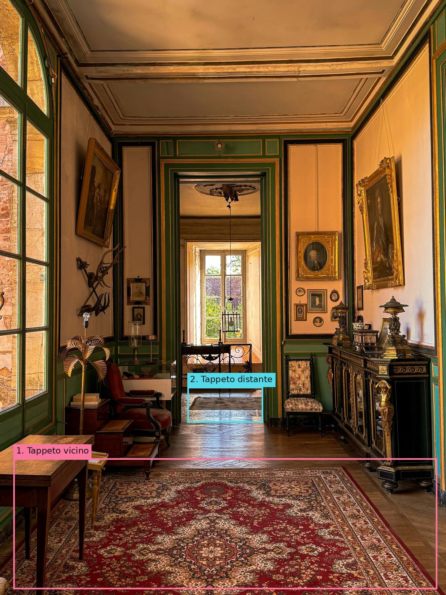
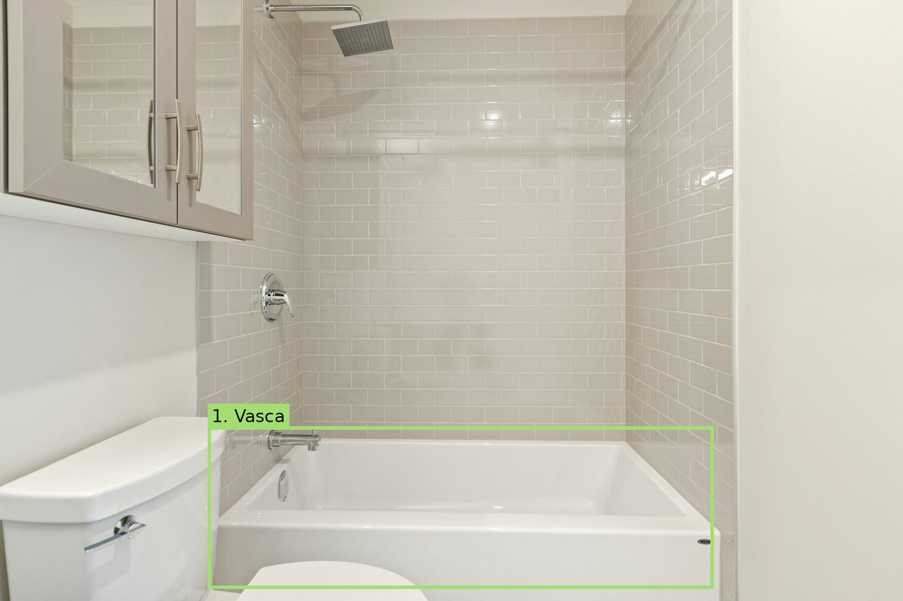

Prima · domanda generica

Dopo · oggetti concreti

Stesse due foto, stesso modello jev-1.14.0. Le box sono risposte API reali: nessuna coordinata è stata corretta a mano. Il nuovo prompt chiede presenza e posizione di sei tipi di oggetto, con le stesse domande su entrambe le immagini.
Risultati puliti e tutte le risposte · Ripetizione indipendente · Metodo e limiti · Riepilogo JSON



Le tre regioni superano presenza ≥ 0.75 e confidenza box ≥ 0.50 in entrambi i passaggi. Sovrapposizione delle box fra i due passaggi: 0.94–1.00 IoU. È una verifica di consistenza su due immagini, non una misura di accuratezza generale o di rischio di caduta. Questi sono oggetti candidati alla revisione, non pericoli confermati.